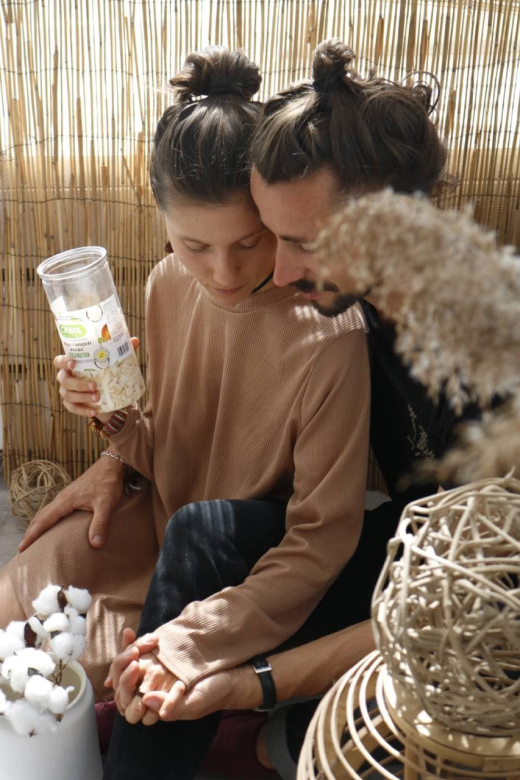
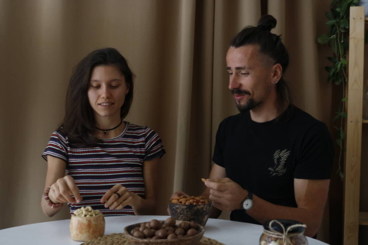
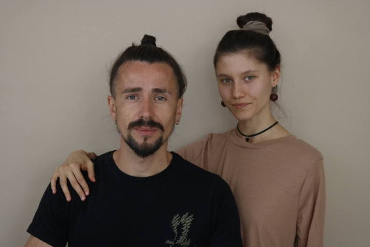

О нас
Андрей и его супруга Ника - создатели проекта Cosmonut.
- Ребята, расскажите пару слов о себе.
- Привет! Если коротко - мы за действия, смелость и решительность. Много ездили по миру, собирали впечатления, набирались опыта. Сами являемся большими фанатами орехов и сухофруктов,
да и в целом здорового образа жизни. Любим природу и активный отдых, мечтаем и планируем, а главное - любим мир в котором живем.
- Как пришла идея открыть виртуальную ореховую лавку?
- Андрей вынашивал эту идею давно. Здесь звезды сошлись. Пандемия нас застала в Индии за три дня до вылета домой. Нужно было искать деятельность. Следующие полгода
на карантине в Гоа мы изготавливали урбечи из орехов и семян, а также сыроедческие ореховые торты на заказ, доставка которых порой превращалась в настоящий квест. Так началась наша ореховая история.. Вернувшись в Минск после почти
года отсутствия перед нами встал вопрос деятельности и после некоторой нерешительности мы все же рискнули...
- Люблю вдохновляющие истории. А какой вы видите миссию вашего проекта?
- Какие сложные вопросы;) Мы хотим, чтобы люди наполняли рацион по-настоящему питательными продуктами, сохраняющими и улучшающими их здоровье.
Хотим рассказывать и показывать, что где-то можно заменить конфеты сухофруктами или тяжелый мясной белок - ореховым. Мы трепетно относимся к здоровью - ведь мало что может сравниться с прекрасным самочувствием, согласитесь?
- Сложно не согласиться! Какие, на ваш взгляд, преимущества у вашего магазина?
- Вообще мы любим называть себя “ореховая лавка с душой”. Для нас по-настоящему важно, чтобы люди ощущали дыхание и жизнь за картинками.
Чтобы они доверяли и знали, что есть мы. Что мы следим за всеми процессами - за качеством, за вкусом, за упаковкой. Отдаем предпочтение необработанным сухофруктам без сахара. Крафтовая упаковка вместо целлофана, пожалуй, тоже преимущество,
так как мы стараемся снизить вред от деятельности. Сегодня все больше людей задумываются об экологии.
Кроме того, индивидуальный подход и клиентоориентированность - мы с каждым ведем диалог, узнаем обратную связь, выбираем удобное
время для доставки, и конечно поощряем подарками и бонусами.
- Что вас больше всего вдохновляет в вашем деле?
- Обратная связь от людей, которую мы получаем! Мы очень ценим ее и очень благодарны людям. Видео отчеты, фотографии и письма - это все приходит в ответ на нашу деятельность,
и, конечно, наполняет наши сердца!
К тому же, несмотря на сухое звучание “интернет магазин” - наша деятельность полна творчества, креатива, коллабораций, благодаря чему наш мозг работает активно и усердно!


